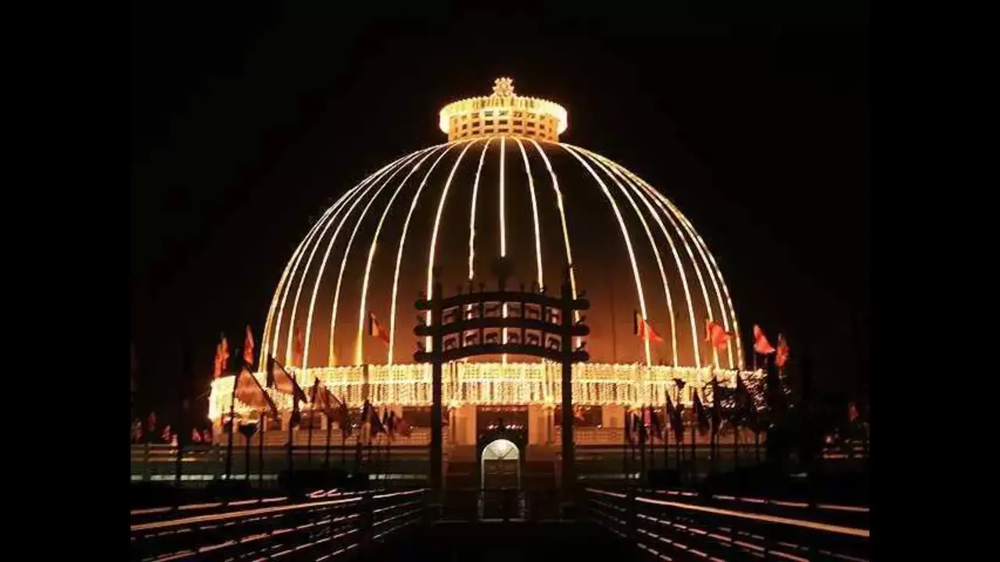
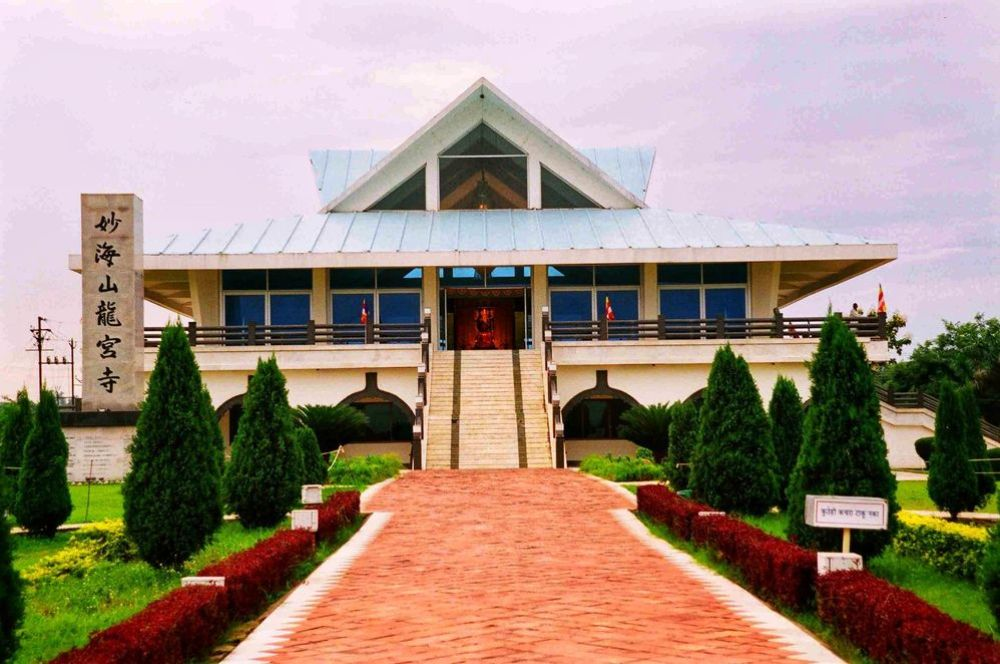
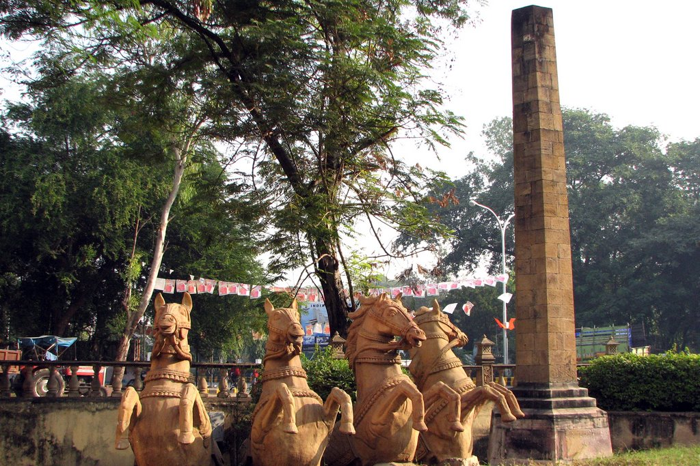
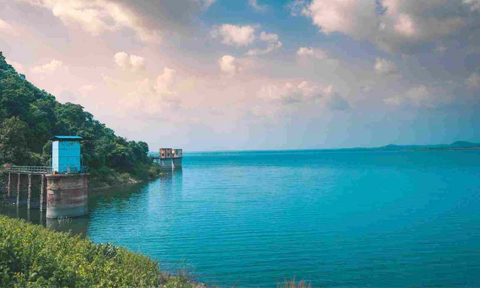
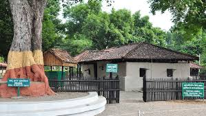
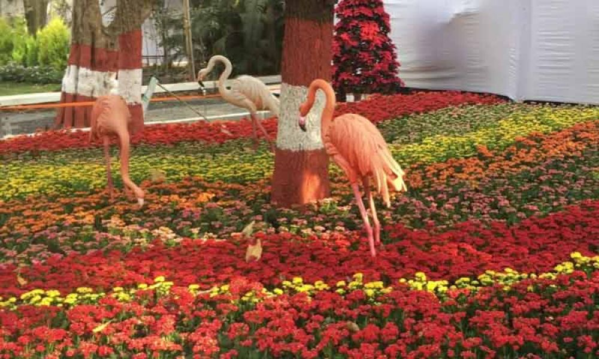
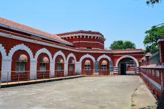
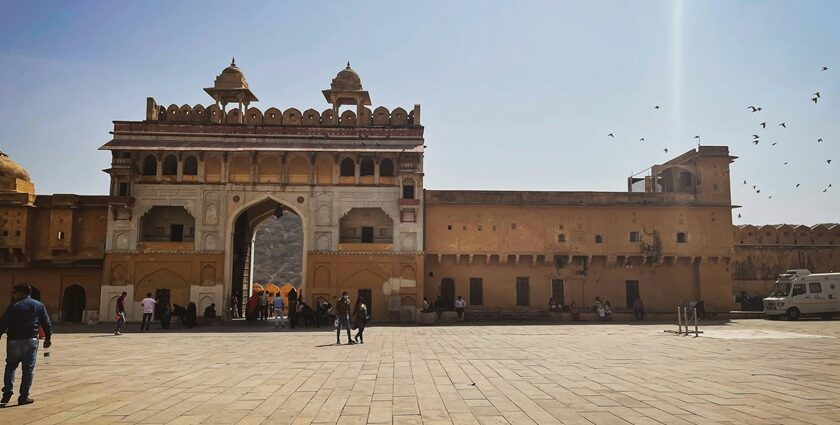

Tadoba Andhari Tiger Reserve: The Land of Tigers
Tadoba Andhari Tiger Reserve is one of the largest and oldest national parks in Maharashtra, known for its rich biodiversity and thriving tiger population.
Fun Fact:
~It is home to one of the highest densities of tigers in India!
Things to Explore at Tadoba Andhari Tiger Reserve:
-
The Safari:
Experience thrilling jeep safaris through the dense forests and witness majestic tigers in their natural habitat.
-
The Flora and Fauna:
Explore the diverse wildlife, including leopards, sloth bears, and various bird species.
-
The Scenic Beauty:
Enjoy the breathtaking landscapes and serene lakes within the reserve.
-
The Photography:
Capture stunning photographs of wildlife and nature.
-
The Eco-Tourism:
Engage in eco-friendly tourism practices and support local communities.
Why Visit Tadoba Andhari Tiger Reserve?
!Because it’s not just a tiger reserve, but a sanctuary for wildlife enthusiasts and nature lovers that offers an unforgettable experience!

Deekshabhoomi: The Birthplace of Buddhism in Nagpur
Deekshabhoomi is a significant Buddhist monument in Nagpur, where Dr. B.R. Ambedkar embraced Buddhism along with thousands of his followers.
Fun Fact:
~It is the largest stupa in Asia and a symbol of social justice and equality!
Things to Explore at Deekshabhoomi:
-
The Stupa:
Marvel at the grand stupa, which is a symbol of peace and enlightenment.
-
The Ambedkar Memorial:
Learn about Dr. B.R. Ambedkar’s life and his contributions to society.
-
The Peace Park:
Enjoy the serene environment and meditate in the peaceful surroundings.
-
The Cultural Significance:
Understand the importance of Buddhism in India and its impact on society.
-
The Community Events:
Participate in various cultural and religious events held throughout the year.
Why Visit Deekshabhoomi?
!Because it’s not just a monument, but a place that embodies the spirit of equality, justice, and peace for all!

Dragon Palace Temple: A Serene Buddhist Retreat
Dragon Palace Temple is a beautiful Buddhist temple located in Nagpur, known for its stunning architecture and peaceful ambiance.
Fun Fact:
~It is one of the largest Buddhist temples in India and a symbol of harmony and tranquility!
Things to Explore at Dragon Palace Temple:
-
The Architecture:
Admire the intricate carvings and unique design of the temple.
-
The Meditation Halls:
Experience the serene environment perfect for meditation and reflection.
-
The Gardens:
Stroll through the beautifully landscaped gardens surrounding the temple.
-
The Cultural Events:
Participate in various cultural and religious events held at the temple.
-
The Peaceful Atmosphere:
Enjoy the tranquility and spiritual ambiance of the temple.
Why Visit Dragon Palace Temple?
!Because it’s not just a temple, but a sanctuary for peace seekers and a place to connect with your inner self!

Zero Milestone: The Geographical Center of India
Zero Milestone is a historical monument in Nagpur, marking the geographical center of India and serving as a significant landmark.
Fun Fact:
~It is the point from which all distances in India are measured!
Things to Explore at Zero Milestone:
-
The Monument:
Visit the iconic monument that symbolizes the heart of India.
-
The Historical Significance:
Learn about the history and importance of Zero Milestone in Indian geography.
-
The Surrounding Area:
Explore the nearby parks and gardens for a relaxing experience.
-
The Cultural Events:
Participate in various cultural events and celebrations held at the site.
-
The Photography:
Capture stunning photographs of this unique landmark.
Why Visit Zero Milestone?
!Because it’s not just a monument, but a place that connects you to the very heart of India’s geography and culture!

Khindsi Lake: A Serene Escape into Nature
Khindsi Lake is a picturesque lake located near Nagpur, offering a perfect getaway for nature lovers and adventure enthusiasts.
Fun Fact:
~It is a popular spot for water sports and boating activities!
Things to Explore at Khindsi Lake:
-
The Boating:
Enjoy thrilling boat rides and water sports activities on the serene waters of the lake.
-
The Scenic Beauty:
Marvel at the breathtaking views of the surrounding hills and lush greenery.
-
The Wildlife:
Spot various bird species and other wildlife in the area.
-
The Picnic Spots:
Relax and unwind at the designated picnic areas around the lake.
-
The Adventure Activities:
Engage in trekking, cycling, and other adventure activities in the vicinity.
Why Visit Khindsi Lake?
!Because it’s not just a lake, but a paradise for nature lovers and adventure seekers looking for a refreshing escape!

Sevagram Ashram: The Spiritual Retreat of Mahatma Gandhi
Sevagram Ashram is a historical site in Nagpur, where Mahatma Gandhi lived and worked towards India's independence.
Fun Fact:
~It is a place of immense historical significance and a symbol of peace and non-violence!
Things to Explore at Sevagram Ashram:
-
The Gandhi Museum:
Learn about Mahatma Gandhi’s life, teachings, and his role in India’s freedom struggle.
-
The Ashram Complex:
Explore the simple yet profound living quarters and prayer halls used by Gandhi.
-
The Peaceful Environment:
Experience the serene atmosphere perfect for meditation and reflection.
-
The Cultural Significance:
Understand the principles of non-violence and truth that Gandhi advocated.
-
The Community Events:
Participate in various cultural and spiritual events held at the ashram.
Why Visit Sevagram Ashram?
!Because it’s not just an ashram, but a place that embodies the spirit of peace, non-violence, and social justice!

Empress Garden: A Floral Paradise in Nagpur
Empress Garden is a beautiful botanical garden in Nagpur, known for its diverse collection of plants and flowers.
Fun Fact:
~It is a haven for nature lovers and a perfect spot for photography enthusiasts!
Things to Explore at Empress Garden:
-
The Floral Displays:
Admire the vibrant flowers and unique plant species in the garden.
-
The Walking Trails:
Enjoy leisurely walks along the well-maintained paths surrounded by lush greenery.
-
The Picnic Spots:
Relax and unwind at the designated picnic areas within the garden.
-
The Educational Tours:
Learn about various plant species and their ecological significance.
-
The Photography Opportunities:
Capture stunning photographs of the beautiful landscapes and floral arrangements.
Why Visit Empress Garden?
!Because it’s not just a garden, but a floral paradise that offers a refreshing escape into nature’s beauty!

Nagpur Central Museum: A Journey Through History
Nagpur Central Museum is a historical museum that showcases the rich cultural heritage and history of Nagpur and the surrounding region.
Fun Fact:
~It houses a vast collection of artifacts, sculptures, and paintings from different eras!
Things to Explore at Nagpur Central Museum:
-
The Artifacts:
Discover ancient artifacts, coins, and sculptures that tell the story of Nagpur’s history.
-
The Galleries:
Explore various galleries dedicated to archaeology, anthropology, and natural history.
-
The Educational Programs:
Participate in workshops and educational programs organized by the museum.
-
The Cultural Significance:
Understand the historical importance of Nagpur in India’s cultural landscape.
-
The Photography:
Capture stunning photographs of the museum’s architecture and exhibits.
Why Visit Nagpur Central Museum?
!Because it’s not just a museum, but a gateway to understanding the rich history and culture of Nagpur!

Nagpur Botanical Garden: A Green Oasis in the City
Nagpur Botanical Garden is a sprawling garden that features a wide variety of plants, trees, and flowers, making it a perfect spot for nature lovers.
Fun Fact:
~It is home to several rare and endangered plant species!
Things to Explore at Nagpur Botanical Garden:
-
The Plant Collection:
Explore the diverse collection of plants and trees from different parts of the world.
-
The Walking Trails:
Enjoy peaceful walks along the well-maintained trails surrounded by lush greenery.
-
The Picnic Areas:
Relax and unwind at the designated picnic spots within the garden.
-
The Educational Tours:
Learn about various plant species and their ecological significance.
-
The Photography Opportunities:
Capture stunning photographs of the beautiful landscapes and floral arrangements.
Why Visit Nagpur Botanical Garden?
!Because it’s not just a garden, but a green oasis that offers a refreshing escape into nature’s beauty!

Nagpur Fort: A Historical Marvel
Nagpur Fort is a historical fort that dates back to the 18th century, showcasing the rich history and architectural brilliance of the region.
Fun Fact:
~It was built by the Bhonsle dynasty and served as a strategic military base!
Things to Explore at Nagpur Fort:
-
The Architecture:
Admire the impressive architecture and intricate carvings of the fort.
-
The Historical Significance:
Learn about the fort’s role in the history of Nagpur and its significance in the region.
-
The Scenic Views:
Enjoy panoramic views of the city from the fort’s ramparts.
-
The Cultural Events:
Participate in various cultural events and festivals held at the fort.
-
The Photography:
Capture stunning photographs of the fort’s architecture and surroundings.
Why Visit Nagpur Fort?
!Because it’s not just a fort, but a historical marvel that offers a glimpse into Nagpur’s glorious past!